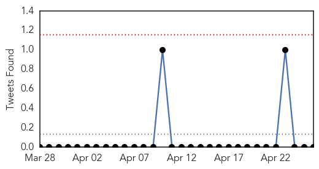
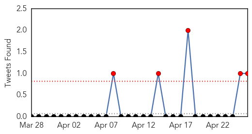
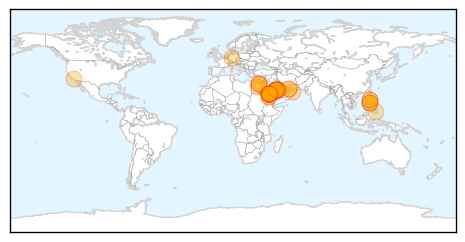

Cholera
30-Day Web Trend
0 alerts, 0 warnings
30-Day Twitter Trend
0 alerts, 0 warnings

Article Locations

Article Confidences

Top Articles:
-
No articles found for Apr 26, 2014
Top Tweets:
-
No tweets found for Apr 26, 2014
MERS
30-Day Web Trend
18 alerts, 0 warnings

30-Day Twitter Trend
5 alerts, 0 warnings

Article Locations
Article Confidences
Top Articles:
- 1.000
- Egypt reports its first case of MERS virus
- 1.000
- MERS infections pass 300 mark in Saudi Arabia — RT News
- 1.000
- Saudis: More deaths from respiratory syndrome
- 1.000
- What we should know about the Middle East Respiratory Syndrome – Coronavirus « Bulatlat
- 0.999
- Saudis in push for MERS vaccine
- 0.999
- Experts question Saudi push for Mers vaccine
- 0.999
- Egypt Reports First Case of MERS Virus
- 0.999
- Filipino envoys meet over MERS-CoV
- 0.998
- Egypt Discovers First MERS Virus Case, 5 More Deaths in Saudi Arabia
- 0.998
- Experts cast doubt on Saudi push for MERS virus vaccine
- 0.998
- Steps on to tackle coronavirus
- 0.997
- 8 more Mers cases negative in UAE - Emirates 24
- 0.997
- Deadly MERS virus detected in Egypt
- 0.996
- Deadly Middle East virus spreads to Egypt
- 0.996
- PHL foreign service posts in Mideast, Africa craft response to MERS-CoV, other viruses
- 0.996
- MERS infection kills five more in Saudi Arabia
- 0.996
- Saudi Arabia MER Virus Death Toll Climbing
- 0.996
- Experts cast doubt on Saudi push for Middle East virus vaccine
- 0.995
- Middle East respiratory illness spooks Hong Kong, brings back memories of Sars
- 0.995
- MERS Case Reported in Egypt
- 0.992
- 5 new MERS deaths bring toll in KSA to 92
- 0.991
- Saudi Arabia reports five new MERS deaths, taking toll to 92
- 0.988
- FBC News
- 0.986
- The high cost of secrecy in Saudi Arabia
- 0.986
- Egypt Reports First MERS Virus Case
- 0.986
- MERS virus kills 92 Saudis; Egypt reports its first case
- 0.984
- Envoys, foreign service execs meet to tackle MERS
- 0.983
- When failure comes with a price
- 0.982
- Egypt reports its first MERS case; virus kills 92 in Saudi Arabia
- 0.981
- DOH: 5 of 6 suspected MERS-CoV carriers in Region 9 found negative of the virus
- 0.981
- ‘Personal hygiene could prevent coronavirus’
- 0.979
- Saudi reports five new MERS deaths, taking toll to 92
- 0.977
- MERS claims 94th victim; 3 specialist centers set up
- 0.976
- Farsnews
- 0.956
- Wrong guy sought for MERS-CoV testing in Zamboanga City
- 0.924
- Saudi- Schools urged to cancel field trips
- 0.912
- A German coronavirus expert says the virus responsible for the MERS infection appears not to have changed Dr
- 0.885
- Saudi MERS death toll now 87: Ministry
- 0.873
- Deadly Middle East virus spreads to Egypt
- 0.843
- DOH tracing 4 more Etihad passengers for MERS test
- 0.822
- Egypt discovers first case of sars-like coronavirus - state TV
- 0.776
- KUNA : Four people die of coronavirus in Saudi Arabia
- 0.740
- MERS control measures launched
Top Tweets:
- 0.701
- MERS a resp disease caused by a resp virus MERS-CoV. Some basic definitions. PART I. http://t.co/50lOYEYsHz @MackayIM